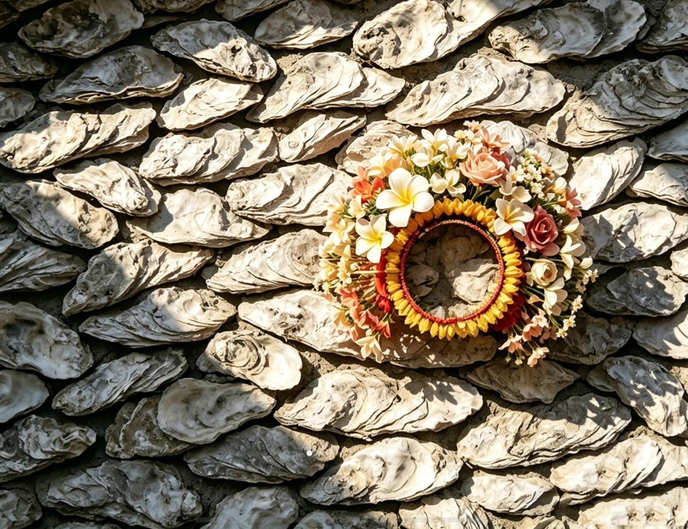

簪花围，是蟳埔女习俗的一种。这一流传于泉州市丰泽区包括蟳埔、金崎、后埔、东梅等地的传统生活方式，具有深厚的地方特色。其中，以蟳埔村为例，千年来的蟳埔村民依赖泉州湾的渔业生活，形成了“以花为生，以蚝筑宅”的独特民俗风貌。
早在先秦时期，鲜花就被赋予了许多美好的寓意。屈原在《离骚》中写道：“扈江离与辟芷兮，纫秋兰以为佩”，以佩戴鲜花来象征自己高尚的品行。
受科举之风的影响，簪花在唐代是功名和荣耀的象征，是唐代文人士子争相追求的目标。唐代李淖《秦中岁时记》记载了唐代为新科进士赐宴折花的事迹。
花象征着喜气，簪花的场合一般也都充满着喜乐祥和，最典型的莫过于婚礼。《东京梦华录》里提到，婚礼中酒过三杯之后，“婿具公裳，花胜簇面”。
汉代流行茱萸会，如在重阳节这天，汉代人“佩茱萸，食蓬饵，饮菊花酒”，除了登山、饮菊花酒外，还会摘下茱萸花佩戴在腰间，意在避灾驱邪，延年益寿。